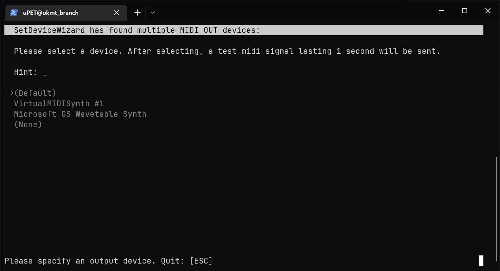
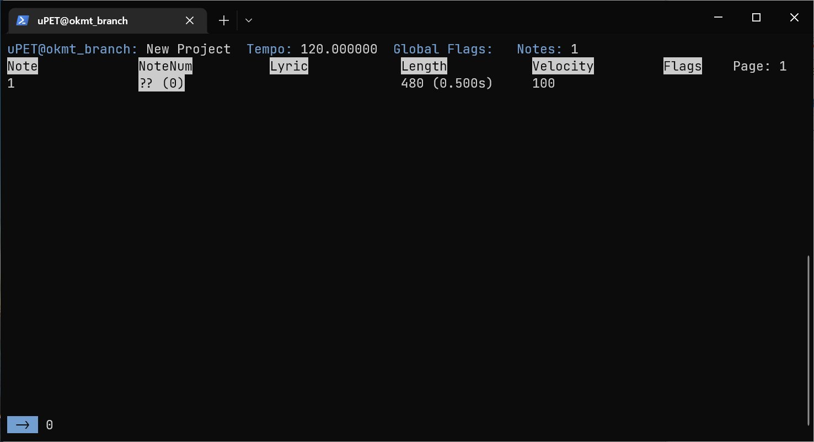
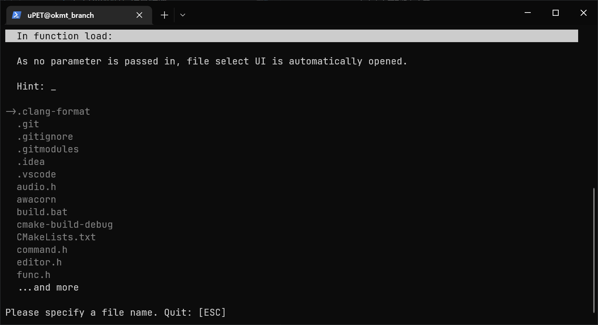
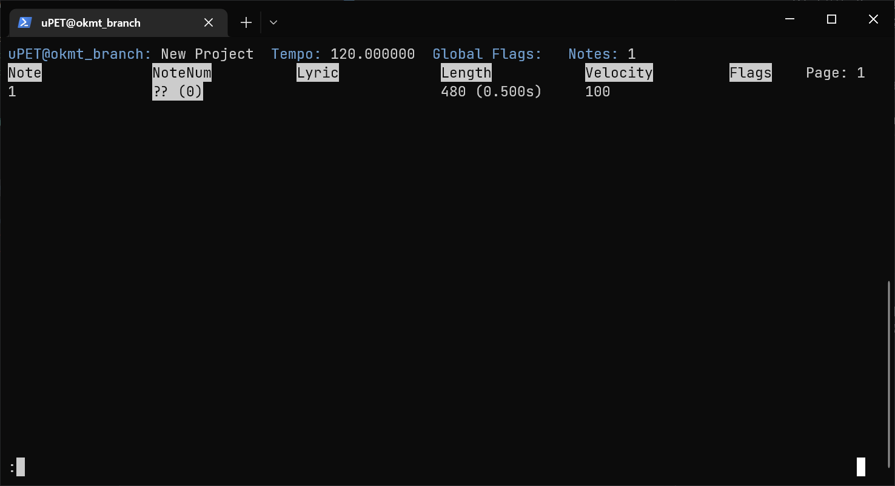

uPET 工具使用说明书👈
文档作者：狼太 (ookamitai)
代码：狼太 (ookamitai), 凌 (FurryR)
项目链接: uPET
总体👈
是之前和凌一起写的项目，但是以为种种原因就分了branch来写了，因此这里的说明只适用于okmt_branch (ver1a)!
借用了凌的awacorn库，可以在这里进行了解！
不过是大粪山，也希望有老师阅读到了文档可以来帮帮我！
UI👈
SetDeviceWizard (存在已知BUG)👈
-
在打开可执行程序时，会出现
SetDeviceWizard。
-
作用：设置MIDI OUT设备
- 控制：
- 上下方向键 + 键盘输入
ESC：退出
- 若有困惑，请选择
(Default)
主编辑器👈
-
在设置完MIDI OUT设备后，会进入到主编辑器界面。
（如果控制台的代码页不是932，会进行自动更换，并显示Your code page is not UTAU-friendly. Switched to 932）
-
作用：编辑
UST文件 - 控制：
- 上下左右方向键（不在命令输入时）：切换行 / 列
PAGE UP/PAGE DOWN：翻页T：Tick和时长相互转换N：在高亮音符前插入音符M：在高亮音符后插入音符B：删除当前音符L：选择，或取消选择P：播放音符 (Beep())O：播放音符 (MIDI)I：编辑当前单元格Excel是吧:（英文冒号）：打开命令输入（ESC退出）
- 若有困惑，请查询上表
文件选择 (存在已知BUG)👈
- 当
:load命令没有额外参数传入时，自动打开此界面。

- 作用：协助选择文件
- 控制：与
SetDeviceWizard相同 - 若有困惑，请在
:load命令后指定fname参数
命令输入👈
- 当数值显示区域出现
:时，表示进入了命令输入，按下ESC退出

可用命令:
:q
- 作用：退出程序
- 参数：无
- 参数作用：无
:load [OPTIONAL: fname]
- 作用：载入文件
- 参数：
- 当传入了
fname参数时：打开工程 - 当没有传入
fname参数时：打开文件选择UI
- 当传入了
- 参数作用：
- 载入工程
:close
- 作用：关闭工程
- 参数：无
- 参数作用：无
:save [OPTIONAL: fname]
- 作用：保存文件
- 参数：
fname：欲保存到的文件名
- 参数作用：
- 当传入了
fname参数时：保存打开的UST文件到路径 - 当没有传入
fname参数时：覆盖打开的UST文件
- 当传入了
:play [OPTIONAL: end]
:play [end] [OPTIONAL: penalty]
- 作用：播放工程(
Beep()) -
参数：
end：播放至第end音符penalty：每个音符长度剪短penalty毫秒
-
参数作用：
- 当传入了0个参数时：以
penalty为5ms播放到工程结束 - 当传入了1个参数时：以
penalty为5ms播放到第end音符 - 当传入了2个参数时：以
penalty为penalty[ms]播放到第end音符
- 当传入了0个参数时：以
:playmidi [OPTIONAL: end]
- 若MIDI OUT未配置，则无法使用
- 作用：播放工程(
MIDI) - 参数：
end：播放至第end音符
- 参数作用：
- 当传入了0个参数时：播放到工程结束
- 当传入了1个参数时：播放到第
end音符
:version
- 作用：显示版本
- 参数：无
- 参数作用：无
:help
- 作用：显示帮助页面（本页面）
- 参数：无
- 参数作用：无
:find [COL1 | COL4: /REGEX/]
:find [COL0 | COL2 | COL3: [< | <= | == | >= | >] value]
- 作用：匹配音符
- 参数：
- （对于第1、4列）
/REGEX/：用来匹配的正则表达式 - （对于第0、2、3列）
[< | <= | == | >= | >]：与value的关系 - （对于第0、2、3列）
value：被比较的值
- （对于第1、4列）
- 参数作用：
- 选中被匹配的音符
:sel
:selall
:desel
:revsel
:delsel
- 作用：
- 选择
- 全选音符
- 取消选择
- 反向选择
- 删除选择
- 参数：无
- 参数作用：无
:theme [R] [G] [B]
- 作用：
- 设置主题色
- 参数：
RGB：分别设置RGB - 参数作用：指定RGB
TODO计划👈
- 加入UTAU PLUGIN兼容性
- 修复
SelectUI的选择BUG - 加入
TimeTravel（撤销 / 重做）
最后更新:
2023年3月4日 16:44:15
创建日期: 2023年3月4日 16:44:15
创建日期: 2023年3月4日 16:44:15